nca_reporting_example.rmd
Krina Mehta
nca_reporting_example.rmd#Install libraries
## Loading required package: knitr## Loading required package: rmarkdown## Loading required package: tables## Loading required package: Hmisc## Loading required package: lattice## Loading required package: survival## Loading required package: Formula## Loading required package: ggplot2##
## Attaching package: 'Hmisc'## The following objects are masked from 'package:base':
##
## format.pval, units## Loading required package: xtable##
## Attaching package: 'xtable'## The following objects are masked from 'package:Hmisc':
##
## label, label<-## Loading required package: plyr##
## Attaching package: 'plyr'## The following objects are masked from 'package:Hmisc':
##
## is.discrete, summarize## Loading required package: dplyr##
## Attaching package: 'dplyr'## The following objects are masked from 'package:plyr':
##
## arrange, count, desc, failwith, id, mutate, rename, summarise,
## summarize## The following objects are masked from 'package:Hmisc':
##
## src, summarize## The following objects are masked from 'package:stats':
##
## filter, lag## The following objects are masked from 'package:base':
##
## intersect, setdiff, setequal, union## ## package path = /usr/local/lib/R/site-library/qpToolkit## Installation Qualification disabled. Unvalidated System.## setting stringsAsFactors to FALSE as qPharmetra default.#Read datasets
#this is the dataset we used for NCA analysis
NTAD <- c(0,0.3,0.5,1,2,4,5,7,9,12,24)
Theoph1 <- Theoph %>%
mutate(NTAD=metrumrg::snap(Time, NTAD)) %>%
mutate(Subject=as.numeric(as.character(Subject)), #converting from factor to numeric
BQL = ifelse(conc<=0.25, 1, 0), #just adding few BLQs to demonstrate functionality
conc= ifelse(conc<=0.25, NA, conc)) #just adding few BLQs to demonstrate functionality
#this is the nca analysis results file
dat <- read.csv("nca_analysis_results.csv", stringsAsFactors = F, na.strings = "NA")
#Units
parUnits <- read.csv("Units_Template.csv", stringsAsFactors = F, na.strings = "")#Tabulate concentrations vs time for each subject and calculate summary stats of concentrations per timepoint (can use visit instead of time)
ConcTab = nca.conc.table(Theoph1,
sumVar = "conc",
subjVar = "Subject",
timeVar = "NTAD",
LOQ = 0.250, #just adding to demonstrate functionality
bloqCode = "BQL",
nsig=3) ## Warning in reshapeWide(data, idvar = idvar, timevar = timevar, varying =
## varying, : multiple rows match for NTAD=1: first taken| Subject | conc.0 | conc.0.3 | conc.0.5 | conc.1 | conc.2 | conc.4 | conc.5 | conc.7 | conc.9 | conc.12 | conc.24 | |
|---|---|---|---|---|---|---|---|---|---|---|---|---|
| 1 | 1 | 0.740 | 2.84 | 6.57 | 10.5 | 9.66 | 8.58 | 8.36 | 7.47 | 6.89 | 5.94 | 3.28 |
| 12 | 2 | BQL | 1.72 | 7.91 | 8.31 | 8.33 | 6.85 | 6.08 | 5.40 | 4.55 | 3.01 | 0.900 |
| 23 | 3 | BQL | 4.40 | 6.90 | 8.20 | 7.80 | 7.50 | 6.20 | 5.30 | 4.90 | 3.70 | 1.05 |
| 34 | 4 | BQL | 1.89 | 4.60 | 8.60 | 8.38 | 7.54 | 6.88 | 5.78 | 5.33 | 4.19 | 1.15 |
| 45 | 5 | BQL | 2.02 | 5.63 | 11.4 | 9.33 | 8.74 | 7.56 | 7.09 | 5.90 | 4.37 | 1.57 |
| 56 | 6 | BQL | 1.29 | 3.08 | 6.44 | 6.32 | 5.53 | 4.94 | 4.02 | 3.46 | 2.78 | 0.920 |
| 67 | 7 | BQL | 0.850 | 2.35 | 5.02 | 6.58 | 7.09 | 6.66 | 5.25 | 4.39 | 3.53 | 1.15 |
| 78 | 8 | BQL | 3.05 | 3.05 | 7.31 | 7.56 | 6.59 | 5.88 | 4.73 | 4.57 | 3.00 | 1.25 |
| 89 | 9 | BQL | 7.37 | 9.03 | 7.14 | 6.33 | 5.66 | 5.67 | 4.24 | 4.11 | 3.16 | 1.12 |
| 100 | 10 | BQL | 2.89 | M | 5.22 | 7.83 | 10.2 | 9.18 | 8.02 | 7.14 | 5.68 | 2.42 |
| 112 | 11 | BQL | 4.86 | 7.24 | 8.00 | 6.81 | 5.87 | 5.22 | 4.45 | 3.62 | 2.69 | 0.860 |
| 123 | 12 | BQL | 1.25 | 3.96 | 7.82 | 9.72 | 9.75 | 8.57 | 6.59 | 6.11 | 4.57 | 1.17 |
| N | N | 12 | 12 | 11 | 12 | 12 | 12 | 12 | 12 | 12 | 12 | 12 |
| Mean | Mean | BQL | 2.869 | 5.484 | 7.830 | 7.888 | 7.492 | 6.767 | 5.695 | 5.081 | 3.885 | 1.403 |
| Geometric Mean | Geometric Mean | BQL | 2.394 | 5.038 | 7.625 | 7.799 | 7.349 | 6.643 | 5.560 | 4.952 | 3.755 | 1.285 |
| SD | SD | NC | 1.878 | 2.222 | 1.865 | 1.239 | 1.549 | 1.374 | 1.320 | 1.208 | 1.092 | 0.7247 |
| Min | Min | BQL | 0.850 | 2.35 | 5.02 | 6.32 | 5.53 | 4.94 | 4.02 | 3.46 | 2.69 | 0.860 |
| Median | Median | BQL | 2.430 | 5.630 | 7.910 | 7.815 | 7.295 | 6.430 | 5.350 | 4.735 | 3.615 | 1.150 |
| Max | Max | 0.740 | 7.37 | 9.03 | 11.4 | 9.72 | 10.2 | 9.18 | 8.02 | 7.14 | 5.94 | 3.28 |
| CV(%) | CV(%) | NC | 65.5 | 40.5 | 23.8 | 15.7 | 20.7 | 20.3 | 23.2 | 23.8 | 28.1 | 51.6 |
| Lower 95% CI | Lower 95% CI | NC | 1.676 | 3.991 | 6.645 | 7.100 | 6.507 | 5.893 | 4.857 | 4.313 | 3.191 | 0.9429 |
| Upper 95% CI | Upper 95% CI | NC | 4.062 | 6.976 | 9.015 | 8.675 | 8.476 | 7.640 | 6.533 | 5.849 | 4.579 | 1.864 |
#Tabulate summary stats only of the concentrations per timepoints
ConcSumTab = tapply(Theoph1$conc, Theoph1$NTAD,
nca.sumstat.conc,
LOQ = 0.250,
ns = 3,
bloqRule = "BLOQ=0",
oddCode = "M",
bloqCode = "BLOQ") %>%
bind_cols() #convert to data frame
#add names
ConcSumTab1 <- cbind(Parameter = names(ConcSumTab$`0`), ConcSumTab)
kable(ConcSumTab1)| Parameter | 0 | 0.3 | 0.5 | 1 | 2 | 4 | 5 | 7 | 9 | 12 | 24 |
|---|---|---|---|---|---|---|---|---|---|---|---|
| N | 1 | 12 | 11 | 13 | 12 | 12 | 12 | 12 | 12 | 12 | 12 |
| Mean | 0.7400 | 2.869 | 5.484 | 7.721 | 7.888 | 7.492 | 6.767 | 5.695 | 5.081 | 3.885 | 1.403 |
| Geometric Mean | 0.7400 | 2.394 | 5.038 | 7.524 | 7.799 | 7.349 | 6.643 | 5.560 | 4.952 | 3.755 | 1.285 |
| SD | NC | 1.878 | 2.222 | 1.828 | 1.239 | 1.551 | 1.374 | 1.320 | 1.208 | 1.092 | 0.7247 |
| Min | 0.740 | 0.850 | 2.35 | 5.02 | 6.32 | 5.53 | 4.94 | 4.02 | 3.46 | 2.69 | 0.860 |
| Median | 0.7400 | 2.430 | 5.630 | 7.820 | 7.815 | 7.295 | 6.430 | 5.350 | 4.735 | 3.615 | 1.150 |
| Max | 0.740 | 7.37 | 9.03 | 11.4 | 9.72 | 10.2 | 9.18 | 8.02 | 7.14 | 5.94 | 3.28 |
| CV(%) | NC | 65.5 | 40.5 | 23.7 | 15.7 | 20.7 | 20.3 | 23.2 | 23.8 | 28.1 | 51.6 |
| Lower 95% CI | NC | 1.676 | 3.991 | 6.616 | 7.100 | 6.507 | 5.893 | 4.857 | 4.313 | 3.191 | 0.9429 |
| Upper 95% CI | NC | 4.062 | 6.976 | 8.826 | 8.675 | 8.478 | 7.640 | 6.533 | 5.849 | 4.579 | 1.864 |
#Individual parameter table with summary stats attached
## [1] "Subject" "route" "method" "tlast"
## [5] "clast.obs" "tlast.ok" "t0.ok" "aucall"
## [9] "auclast" "aumcall" "aumclast" "calc.teval"
## [13] "auc8" "teval" "c0" "area.back.extr"
## [17] "no.points" "intercept" "lambda_z" "r.squared"
## [21] "adj.r.squared" "start_th" "end_th" "thalf"
## [25] "includeCmax" "DOSE" "reg" "ss"
## [29] "clast.pred" "aucinf.obs" "aucinf.pred" "aumcinf.obs"
## [33] "aumcinf.pred" "cl.f.obs" "cl.f.pred" "mrt.obs"
## [37] "mrt.pred" "vz.f.obs" "vz.f.pred" "vss.obs"
## [41] "vss.pred" "pctextr.obs" "pctextr.pred" "pctback.obs"
## [45] "pctback.pred" "cmax" "tmax"#choose parameters wanted in the table
ncaKeepers <- Cs(cmax, clast.obs, aucinf.pred, auclast,
tmax, tlast, lambda_z, cl.f.pred, vss.pred)
unitNorm = rep(1,times=9)
nsignif = rep(3,times=9)
#Format individual patients' NCA results
nca_ind = nca.format.table(dat, carryAlong=Cs(Subject),
parms=ncaKeepers, ns = nsignif,
uAdjust=unitNorm)
#Calculate NCA summary and append to individual table
nca_sum = nca.summary.table(nca_ind, subjVar = "Subject",
carryAlong=NULL, omits=NULL, LOQ=0.25)
# formatting the table
nca_sum_formatted = ncaTabulate(nca_sum, units=parUnits)
kable(nca_sum_formatted, row.names=F)| ~ | C (mg/L) | C (mg/L) | AUC (h*mg/L) | AUC (h*mg/L) | T (h) | T (h) | \(\lambda\) (1/h) | CL/F (L/h) | V (L) |
|---|---|---|---|---|---|---|---|---|---|
| 1 | 10.5 | 3.28 | 217 | 149 | 1.12 | 24.4 | 0.0485 | 0.0186 | 0.386 |
| 2 | 8.33 | 0.9 | 100 | 91.5 | 1.92 | 24.3 | 0.104 | 0.044 | 0.438 |
| 3 | 8.2 | 1.05 | 110 | 99.3 | 1.02 | 24.2 | 0.102 | 0.0413 | 0.435 |
| 4 | 8.6 | 1.15 | 118 | 107 | 1.07 | 24.6 | 0.0993 | 0.0371 | 0.409 |
| 5 | 11.4 | 1.57 | 139 | 121 | 1 | 24.4 | 0.0866 | 0.0421 | 0.502 |
| 6 | 6.44 | 0.92 | 83.9 | 73.8 | 1.15 | 23.8 | 0.0916 | 0.0477 | 0.546 |
| 7 | 7.09 | 1.15 | 104 | 90.7 | 3.48 | 24.2 | 0.0883 | 0.0477 | 0.573 |
| 8 | 7.56 | 1.25 | 104 | 88.6 | 2.02 | 24.1 | 0.0818 | 0.0438 | 0.543 |
| 9 | 9.03 | 1.12 | 99.9 | 86.3 | 0.63 | 24.4 | 0.0825 | 0.031 | 0.373 |
| 10 | 10.2 | 2.42 | 171 | 138 | 3.55 | 23.7 | 0.075 | 0.0323 | 0.467 |
| 11 | 8 | 0.86 | 89.1 | 80.1 | 0.98 | 24.1 | 0.0955 | 0.0552 | 0.575 |
| 12 | 9.75 | 1.17 | 131 | 120 | 3.52 | 24.2 | 0.11 | 0.0406 | 0.414 |
| N | 12 | 12 | 12 | 12 | 12 | 12 | 12 | 12 | 12 |
| Mean | 8.758 | 1.403 | 122.2 | 103.8 | 1.788 | 24.20 | 0.08876 | 0.04012 | 0.4718 |
| Geometric Mean | 8.646 | 1.285 | 117.7 | 101.5 | 1.515 | 24.20 | 0.08709 | 0.03885 | 0.4666 |
| SD | 1.472 | 0.7247 | 38.27 | 23.59 | 1.112 | 0.2558 | 0.01631 | 0.009501 | 0.07343 |
| Min | 6.44 | 0.860 | 83.9 | 73.8 | 0.630 | 23.7 | 0.0485 | 0.0186 | 0.373 |
| Median | 8.465 | 1.150 | 107.0 | 95.40 | 1.135 | 24.20 | 0.08995 | 0.04170 | 0.4525 |
| Max | 11.4 | 3.28 | 217 | 149 | 3.55 | 24.6 | 0.110 | 0.0552 | 0.575 |
| CV(%) | 16.8 | 51.6 | 31.3 | 22.7 | 62.2 | 1.1 | 18.4 | 23.7 | 15.6 |
| Lower 95% CI | 7.823 | 0.9429 | 97.93 | 88.78 | 1.082 | 24.04 | 0.07840 | 0.03408 | 0.4251 |
| Upper 95% CI | 9.694 | 1.864 | 146.6 | 118.8 | 2.495 | 24.36 | 0.09912 | 0.04615 | 0.5184 |
#Visualize NCA results
plot<- left_join(Theoph1, dat) %>%
ungroup() %>%
mutate(TAD1=Time,
DV=conc,
start_conc=exp(intercept-lambda_z*start_th),
end_conc=exp(intercept-lambda_z*end_th),
thalf_txt=ifelse(!is.na(thalf),
paste0("Half-life:",round(thalf,2)," h "),"Half-life not calculated "),
radj_txt=ifelse(!is.na(thalf),
paste0("Adj. R-squared: ",round(r.squared,4)," ")," ")) %>%
group_by(Subject) %>%
mutate(max_conc=10**(ceiling(log10(max(conc,na.rm=T)))),
min_conc=10**(floor(log10(min(conc,na.rm=T))))) %>%
ungroup() %>%
filter(!is.na(DV))## Joining, by = "Subject"plots = plot %>% group_by(Subject) %>%
do(plots=ggplot(data=.) +
geom_line(data=., mapping=aes(x=TAD1, y=DV), color=qp.blue) +
geom_point(data=., mapping=aes(x=tmax, y=cmax), color="gold3", size=6) +
geom_point(data=., mapping=aes(x=TAD1, y=DV), color=qp.blue, size=4) +
geom_segment(data=.,x=.$start_th,xend=.$end_th,
y=log10(.$start_conc), yend=log10(.$end_conc),
color=qp.green, linetype="solid", size=1) +
geom_point(data=.[.$TAD1>=.$start_th&.$TAD1<=.$end_th,],
mapping=aes(x=TAD1, y=DV), size=4, color=qp.green) +
annotate(geom="text",label=unique(.$thalf_txt), x=Inf, y=Inf, hjust=1, vjust=2) +
annotate(geom="text",label=unique(.$radj_txt), x=Inf, y=Inf, hjust=1, vjust=4) +
scale_y_log10(
#limits=c(unique(.$min_conc),unique(.$max_conc)),
#breaks=(10**(seq(log10(unique(.$min_conc)),log10(unique(.$max_conc))))),
#labels=(10**(seq(log10(unique(.$min_conc)),log10(unique(.$max_conc)))))
) +
xlab("Time after Dose (h)") +
ylab("Concentrations (mg/L)") +
theme(legend.direction="horizontal",legend.position="bottom", aspect.ratio=0.4,
legend.text = element_text(size=15),
plot.title =element_text(hjust = 0, size=15),
panel.background = element_rect(fill = 'white', colour="black"),
panel.grid.major = element_line(colour = "grey"),
panel.grid.minor = element_blank(),
axis.title.x = element_text(size=15), axis.title.y = element_text(size=15),
axis.text.x=element_text(colour="black", size=15),
axis.text.y=element_text(colour="black", size=15)) +
ggtitle(paste0("Patient: ",.$Subject)))
print(plots$plots)## [[1]]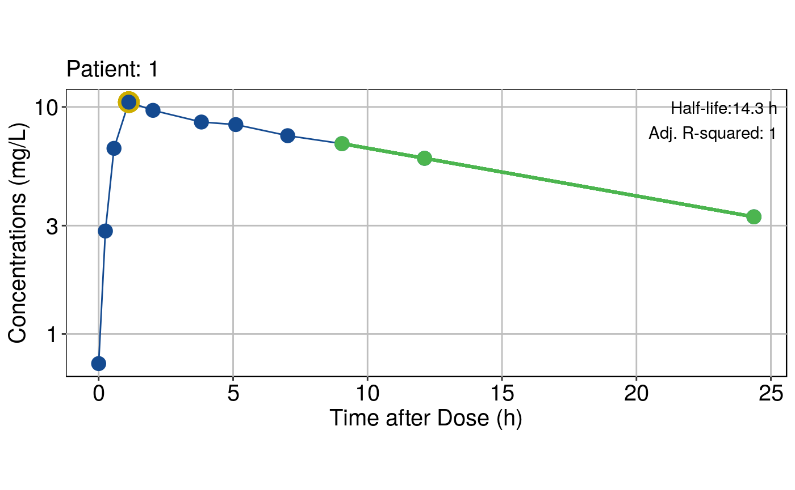
##
## [[2]]
##
## [[3]]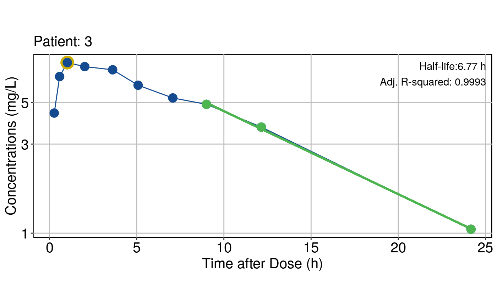
##
## [[4]]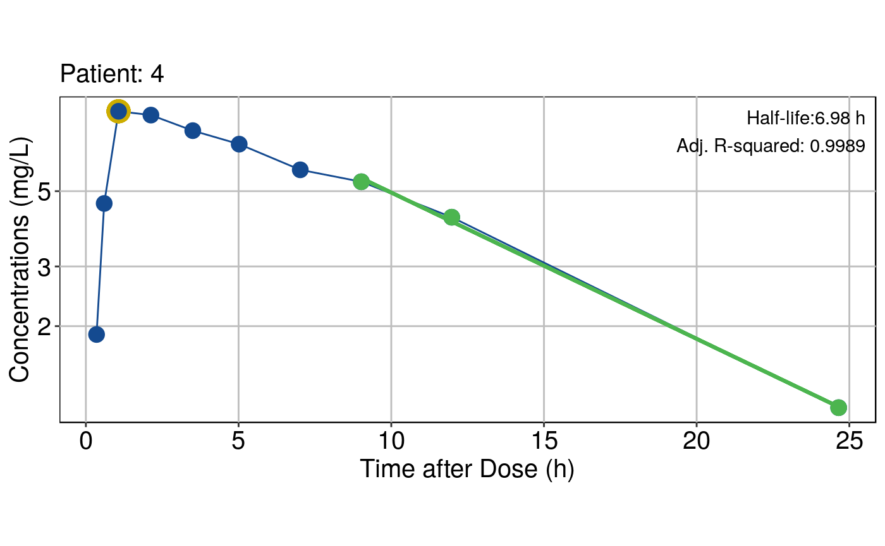
##
## [[5]]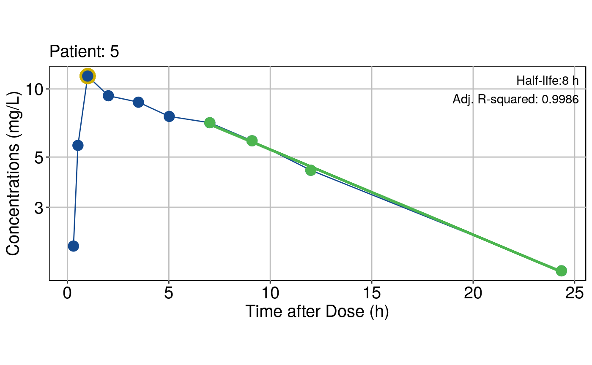
##
## [[6]]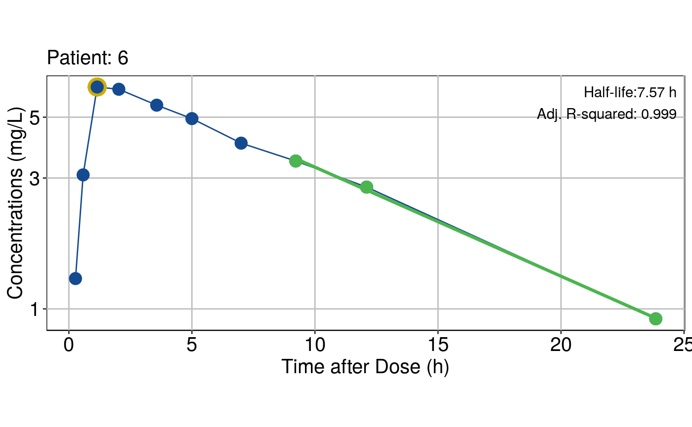
##
## [[7]]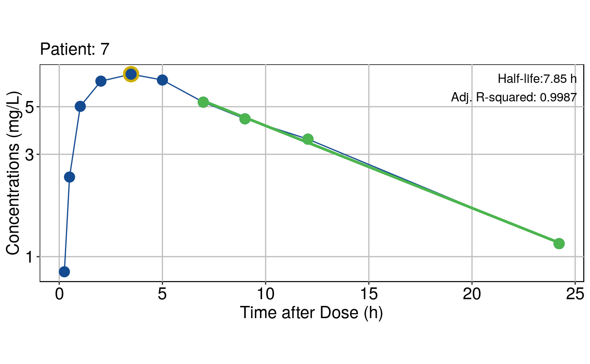
##
## [[8]]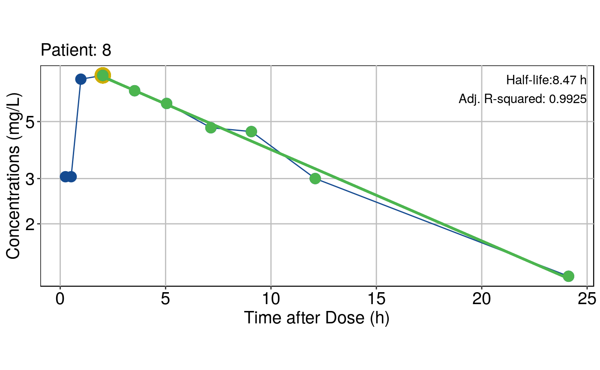
##
## [[9]]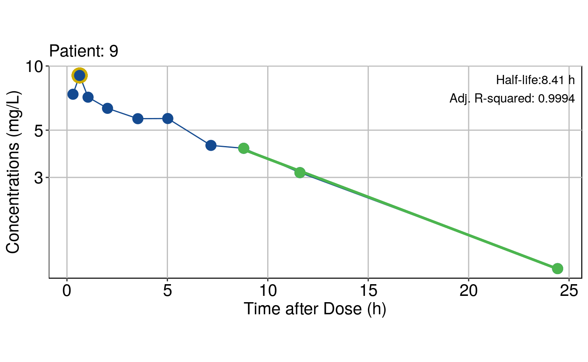
##
## [[10]]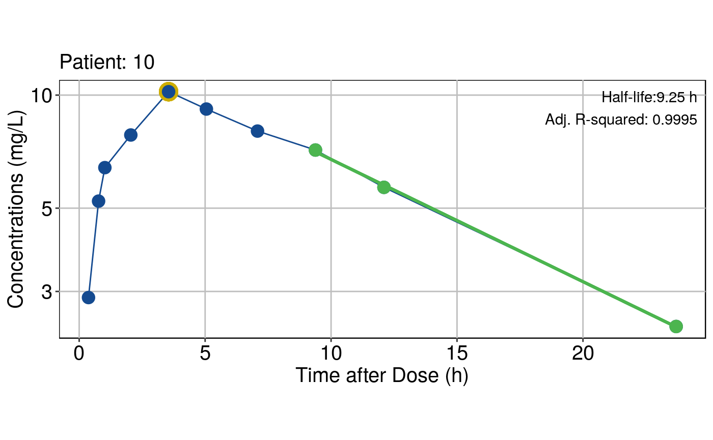
##
## [[11]]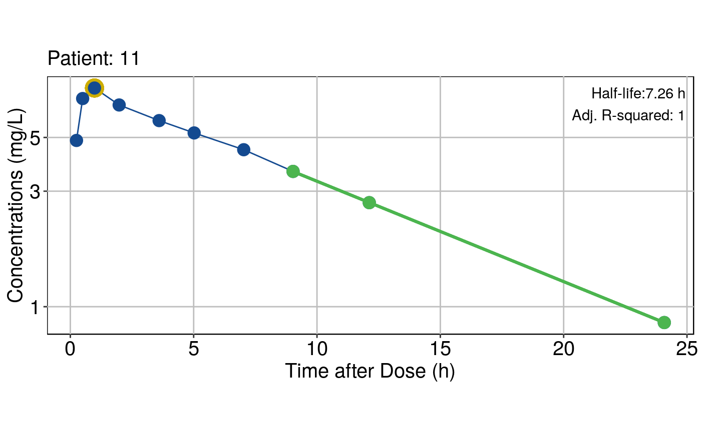
##
## [[12]]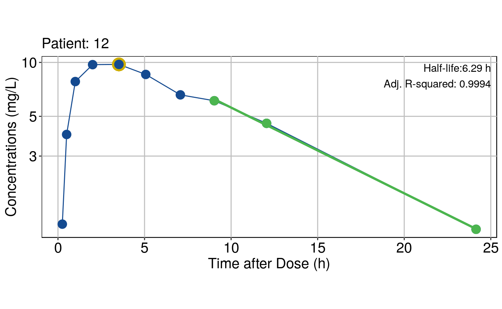